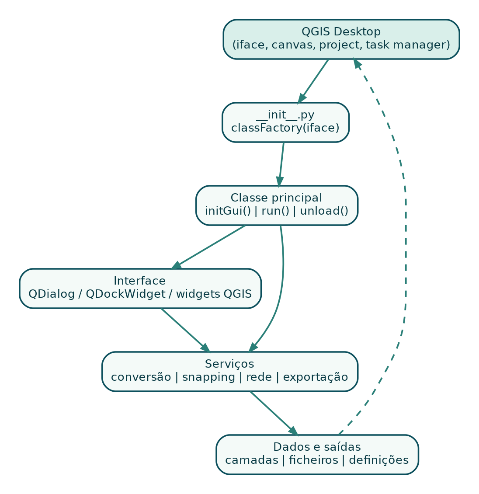

3 Parte I - Fundamentos
3.1 1. O que é um plugin QGIS?
Um plugin é um pacote de software carregado pelo QGIS para acrescentar comportamentos que não existem no núcleo da aplicação ou que precisam de ser adaptados a um fluxo específico. Um plugin pode ser pequeno, com uma única acção, ou incluir interfaces, algoritmos, painéis, serviços de rede, gestão de dados e automação.
Python é a opção mais acessível para a maioria dos plugins QGIS porque não exige compilação separada para Windows, Linux e macOS. O pacote contém ficheiros Python, metadata, documentação e recursos. O gestor de plugins instala o ZIP e o QGIS importa o pacote no perfil do utilizador.
3.1.1 1.1 Script, algoritmo Processing ou plugin?
Use a consola Python quando:
- pretende testar uma ideia rapidamente;
- o código será executado poucas vezes;
- não precisa de distribuição nem de interface estável.
Use um algoritmo Processing quando:
- a função recebe dados, parâmetros e produz resultados;
- o fluxo deve funcionar em lote, no modelador ou por linha de comandos;
- não precisa de interacção contínua com o mapa.
Use um plugin completo quando:
- precisa de menu, barra de ferramentas, diálogo ou painel;
- precisa de manter estado entre acções;
- reage a cliques, mudanças de projecto ou selecção de camadas;
- integra tarefas, rede, edição ou múltiplos serviços.
O GPX Batch Converter poderia, em parte, ser um algoritmo Processing. Contudo, a necessidade de resultados tabulares, cancelamento, selecção de formatos, relatórios e gestão de tarefas justificou uma interface própria. O GeoClick Capture necessita de um plugin completo porque mantém uma ferramenta de mapa activa, um painel de sessão e preferências persistentes.
3.1.2 1.2 O contrato entre QGIS e o plugin
O QGIS não adivinha como iniciar o código. Ele procura uma pasta válida, lê metadata.txt, importa __init__.py e chama classFactory(iface). Esta função devolve uma instância da classe principal. Depois, o QGIS chama initGui() para registar a interface e unload() quando o plugin é desactivado.
O objecto iface é a principal porta de entrada para a interface do QGIS. Através dele, o plugin acede ao mapa, à janela principal, aos menus, à barra de mensagens e a outros componentes.

3.1.3 1.3 Princípio fundamental: resolver um problema definido
Antes de escrever código, responda:
- Quem utilizará o plugin?
- Qual é a tarefa repetitiva ou propensa a erro?
- Quais entradas e saídas são necessárias?
- O QGIS já possui a funcionalidade?
- Existe um plugin semelhante?
- O plugin deve funcionar sem Internet?
- Que versões de QGIS e sistemas operativos serão suportadas?
- Como o utilizador saberá que a operação terminou ou falhou?
Um escopo bem definido evita um plugin que tenta fazer tudo e não executa nada com clareza.
Estudo de caso - diferenciação: o projecto inicialmente chamado QGIS LatLon sobrepunha-se a ferramentas existentes de coordenadas. O reposicionamento para GeoClick Capture definiu um propósito distinto: criar registos auditáveis de cliques, com sessão, metadados, snapping e revisão.
3.2 2. Ambiente de desenvolvimento
3.2.1 2.1 Instalações recomendadas
Prepare:
- QGIS suportado pelo projecto;
- editor como Visual Studio Code, PyCharm ou outro com suporte Python;
- Git;
- Plugin Reloader, para recarregar o plugin durante o desenvolvimento;
- opcionalmente Qt Designer, para interfaces
.ui; - uma pasta de dados mínimos de teste.
Ao suportar QGIS 3 e 4, mantenha pelo menos um ambiente de teste para cada geração. Testar apenas no QGIS instalado no computador do autor é insuficiente.
3.2.2 2.2 Pasta de plugins do perfil
Em Windows, as localizações mais comuns são:
C:\Users\<UTILIZADOR>\AppData\Roaming\QGIS\QGIS3\profiles\default\python\plugins\
C:\Users\<UTILIZADOR>\AppData\Roaming\QGIS\QGIS4\profiles\default\python\plugins\Em Linux:
~/.local/share/QGIS/QGIS3/profiles/default/python/plugins/
~/.local/share/QGIS/QGIS4/profiles/default/python/plugins/O nome da pasta deve ser um identificador Python válido. Use letras minúsculas, números e _. Não use hífen.
correcto: quick_point_logger
incorrecto: quick-point-logger3.2.3 2.3 Instalação de desenvolvimento
Pode copiar a pasta ou cloná-la directamente no perfil:
git clone https://github.com/UTILIZADOR/REPOSITORIO.git quick_point_loggerDurante o desenvolvimento:
- altere o código no editor;
- guarde os ficheiros;
- recarregue o plugin;
- teste o fluxo afectado;
- consulte o painel Log Messages e a consola Python.
3.2.4 2.4 Organização do repositório
Uma estrutura prática é:
project-root/
├── .github/workflows/
├── docs/
├── sample_data/
├── tests/
├── quick_point_logger/
│ ├── __init__.py
│ ├── metadata.txt
│ ├── plugin.py
│ ├── dialog.py
│ ├── icons/
│ ├── LICENSE
│ └── README.md
├── CHANGELOG.md
├── LICENSE
└── README.mdO ZIP instalável deve conter apenas a pasta do plugin como directório de topo. O repositório pode ter testes e documentação adicionais fora dessa pasta.
3.3 3. Planeamento e arquitectura
3.3.1 3.1 Escrever uma especificação curta
Antes do código, escreva uma página com:
- problema;
- utilizadores;
- funcionalidades obrigatórias;
- funcionalidades futuras;
- dados de entrada e saída;
- dependências;
- restrições de segurança;
- critérios de aceitação.
Exemplo para o GPX Batch Converter:
Problema: converter centenas de GPX manualmente é demorado e inconsistente.
Entradas: pasta com .gpx, tipos de subcamada, formato de saída.
Saídas: ficheiros GIS, relatório de resultados e mensagens de erro.
Critérios: interface responsiva, cancelamento, nomes seguros, sem shell=True.3.3.2 3.2 Separar interface, lógica e infra-estrutura
Evite colocar toda a aplicação num único método de botão. Uma divisão mínima:
- classe principal: integração com QGIS;
- diálogo/painel: widgets e sinais;
- serviço ou tarefa: processamento;
- utilitários: validação, nomes, compatibilidade;
- testes: funções independentes e regras de pacote.
A separação melhora testes, manutenção e compatibilidade. No GPX Batch Converter, a classe principal regista a acção, o diálogo recolhe opções e GpxConversionTask executa o lote. No GeoClick Capture, a classe principal gere o mapa, enquanto o painel gere a sessão e a tabela.
3.3.3 3.3 Estado do plugin
Identifique o estado que precisa de ser mantido:
- acções e widgets;
- ferramenta de mapa activa;
- camada de destino;
- tarefa em execução;
- pedidos de rede pendentes;
- última coordenada;
- preferências;
- resultados da última operação.
Todo recurso criado em initGui() deve ser removido, fechado ou cancelado em unload().